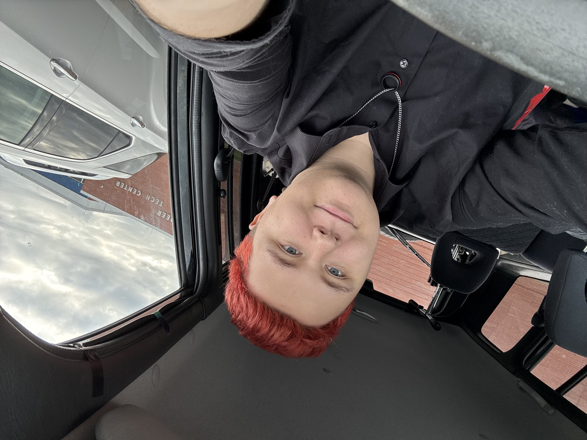

About Me
Hello, I'm Elm Jolley, currently a senior at Kettering Fairmont High School, and I will be a freshman at the University of Toledo in the fall of 2026. Over the past two years, I have been part of the career technical center program offered by Fairmont. Through this opportunity, I have gained valuable experience in the IT field that is helping prepare me for my future career. I have spent much of my time learning to code and understanding computer hardware, which has pushed me toward pursuing a degree in Computer Engineering.
In my Information Technology program, I have learned a variety of programming languages, including HTML, CSS, and JavaScript. I have also gained experience with hardware components, networking, and cybersecurity. Through hands-on projects and real-world scenarios, I have developed problem-solving skills and the ability to work collaboratively in a team environment. My time in the program has solidified my passion for technology and has given me the confidence to pursue a career in this field, while also giving me the amazing opportunity to intern at The Education Connection.
Outside of the technical program, I play in my school's orchestra and have done so for the past six years. I play the viola and began learning it in the fourth grade before moving to the state of Ohio. I have also held some form of a job since sophomore year, beginning in October of 2023 when I helped open the Centerville location of Huey Magoo’s. Since then, I have had a total of three jobs, giving me more than 1,000 hours of work experience. Working and being part of something bigger than myself has taught me work ethic, teamwork, and how to handle high-stress, fast-paced environments.
Growing up, I moved around a lot, having been a military brat for the first 16 years of my life until my father retired. I lived across the United States and even in Germany during my early childhood, bouncing around during elementary school before eventually landing in a place where I could stay. Because of that, I learned how to adapt quickly, adjust to new environments, and make the best of whatever situation I was in. Those experiences helped shape what I want for my future in college, career, and hobbies, and I am excited to see where life takes me next.